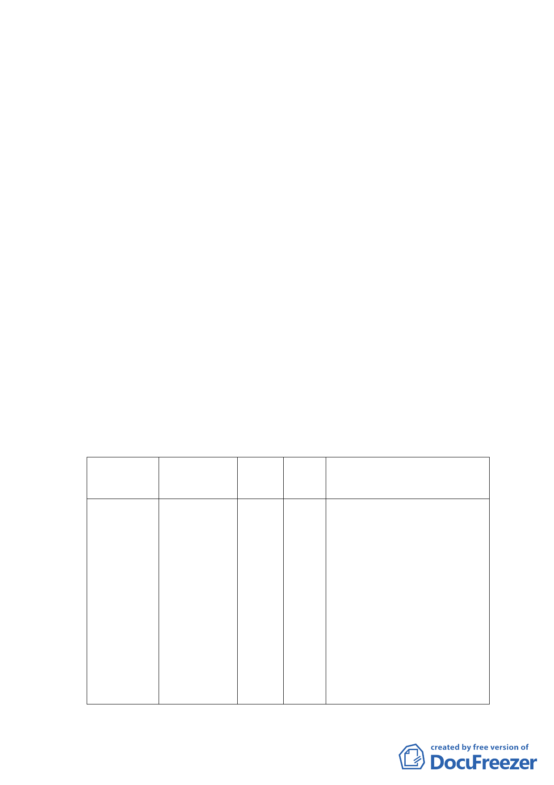

地重劃大隊檢送書圖就編號住25東北側建築密集地區，因參
與重劃困難，已自重劃範圍剔除之。本府續依都市計畫法第
27 條 第 1 項 第 4 款 規 定 ， 於 87 年 6 月 12 日 以 府 都 二 字 第
8703984500 號「修訂臺北市士林區(保變住編號住25地區)
都市細部計畫暨配合變更主要計畫案」辦理公開展覽並送市
都委會審議。
惟住25東北側建築密集地區，因參與重劃困難，於87年
公開展覽計畫書圖載明自重劃範圍剔除之，並經本市都市計
畫委員會88年3月15日第445次委員會議審議通過，但因住25
地區擬公辦市地重劃地區環評審查不同意，致全案擱置，未
就未涉及環境影響部分發布實施。
本計畫範圍本市士林區至善段三小段49地號為尚未建
築之土地，部分土地位於住25東北側建物密集地區範圍內，
因住25地區遲無法開發，致該地號土地位於住25地區外之第
一種住宅土地難以開發利用，考量本計畫區位於住25 之計
畫區邊緣，前經本市都委會審議通過之計畫書同意剔除於市
地重劃範圍，且並非位於行政院公告之山坡地範圍內，土地
所有權人爰依都市計畫法第24 條規定辦理本修訂計畫案。
三、 變更主要計畫內容：
變更位置
原計畫
面積
新計畫
（㎡）
變更理由
第一種住宅區
1. 於 87 年 6 月 12 日 府 都 二 字 第
保變住地區
編 號 住 25 地
區東北側（本
市士林區至
善段三小段
49 地 號 土
地）
及第一種住宅
區(已發布細
部計畫地區，
都市計畫書規
定應實施市地
重劃，於公告
實施市地重劃
計畫前，尚未
第一種
住宅區
551（保
變住範
圍約
250㎡）
8703984500 號 公 告 公 開 展 覽 之
「修訂臺北市士林區(保變住編
號住25地區)都市細部計畫暨配
合變更主要計畫案」內，已將住
25地區東北側房屋密集地區擬
剔除於重劃區範圍外，考量本計
畫區位於住25之計畫區邊緣且
非位於行政院公告之山坡地範
能依變更後之
圍內，土地所有權人為促進其土
-5-